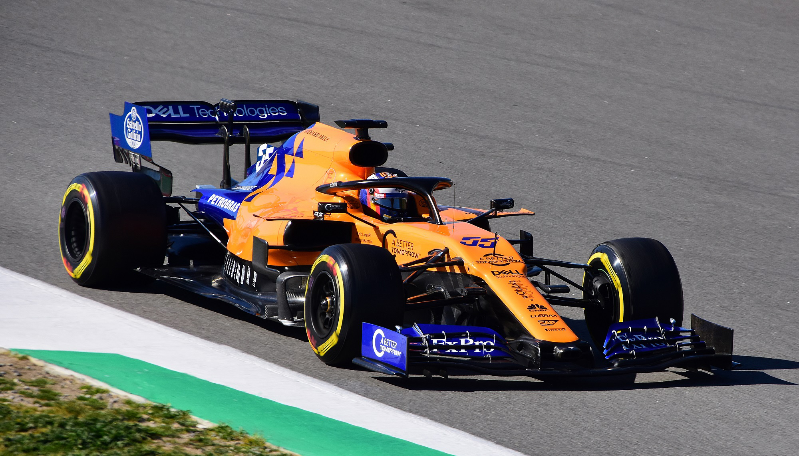

<!DOCTYPE html>
<html style="height:100%"></html>
    <head>
        <meta charset="UTF-8">    
        <meta name="viewport" content="width=device-width, initial-scale=1.0">
        <link rel="stylesheet" type="text/css" href="style.css">
        <link rel="stylesheet" href="https://maxcdn.bootstrapcdn.com/bootstrap/4.1.3/css/bootstrap.min.css">
        <script src="https://ajax.googleapis.com/ajax/libs/jquery/3.3.1/jquery.min.js"></script>
        <script src="https://cdnjs.cloudflare.com/ajax/libs/popper.js/1.14.3/umd/popper.min.js"></script>
        <script src="https://maxcdn.bootstrapcdn.com/bootstrap/4.1.3/js/bootstrap.min.js"></script>
        <title>Formula Cars - F1</title>
    </head>
    <body style="height:100%">
        <header class="container-fluid text-center"></header>
        <nav class="nav principal"></nav>
            <ul class="nav-list">
                <li class="nav-item">
                    <a class="nav-link" href="index.html">Main Page</a>
                </li>
                <li class="nav-item">
                    <a class="nav-link" href="formula1.html">Formula 1</a>
                </li>
                <li class="nav-item">
                    <a class="nav-link" href="formula2.html">Formula 2</a>
                </li>
                <li class="nav-item">
                    <a class="nav-link" href="formula3.html">Formula 3</a>
                </li>
            </ul>
        </nav>
        <main class="principal">
            <div class="picture">
                
            </div>
            <div class="description"> 
                    <h1>Formula 1</h1>
                    <h5>Formula 1 is the highest class of single-seater auto racing sanctioned by the Fédération Internationale de l'Automobile (FIA) and owned by the Formula One Group. The World Drivers' Championship, which became the FIA Formula One World Championship in 1981, has been one of the premier forms of racing around the world since its inaugural season in 1950. The word "formula" in the name refers to the set of rules to which all participants' cars must conform.[1] A Formula One season consists of a series of races, known as Grands Prix (French for ''grand prizes' or 'great prizes''), which take place worldwide on purpose-built circuits and on public roads.</h5>
            </div>
        </main>
    </body>
</html>